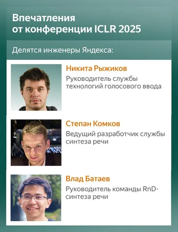
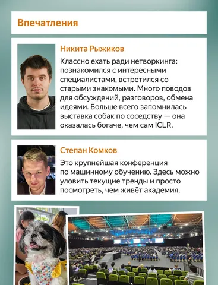
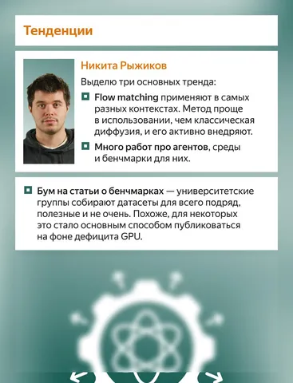
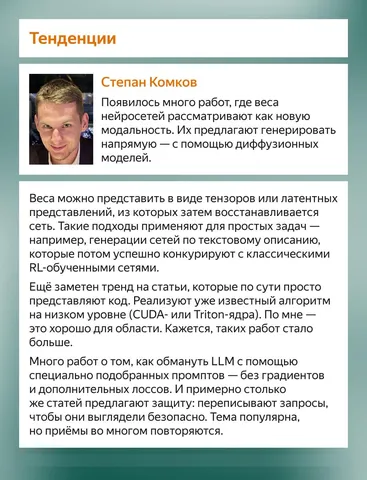
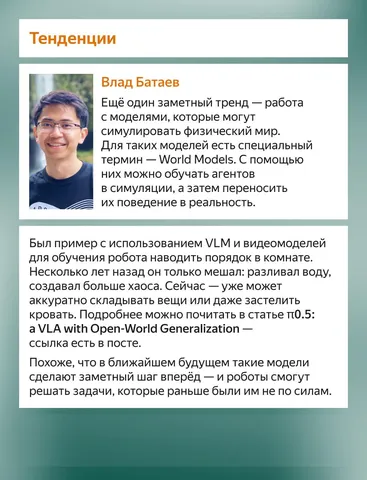
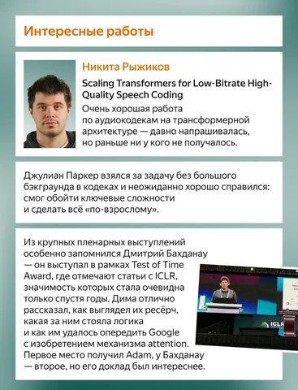
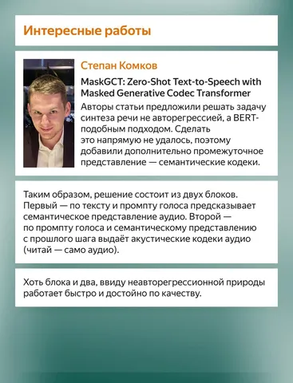
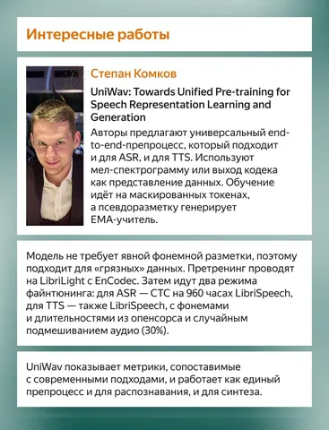
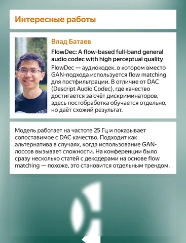
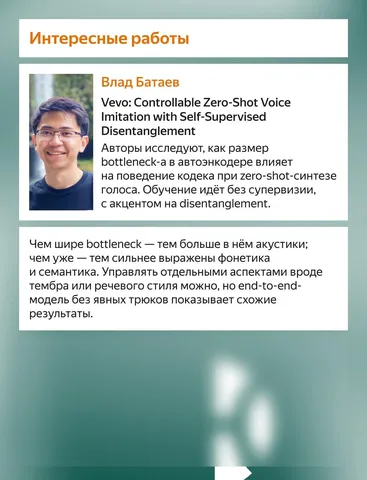

Мы попросили инженеров Яндекса подвести личные итоги конференции ICLR 2025 и рассказать, чем она запомнилась. О трендах в индустрии, интересных статьях на тему аудио и впечатлениях — в наших карточках.
Работы и ссылки, которые упоминаются в посте:
— π0.5: a VLA with Open-World Generalization
— Scaling Transformers for Low-Bitrate High-Quality Speech Coding
— MaskGCT: Zero-Shot Text-to-Speech with Masked Generative Codec Transformer
— UniWav: Towards Unified Pre-training for Speech Representation Learning and Generation
— FlowDec: A flow-based full-band general audio codec with high perceptual
— Vevo: Controllable Zero-Shot Voice Imitation with Self-Supervised Disentanglement
— Announcing the Test of Time Award Winners from ICLR 2015
Speech Info
#YaICLR
